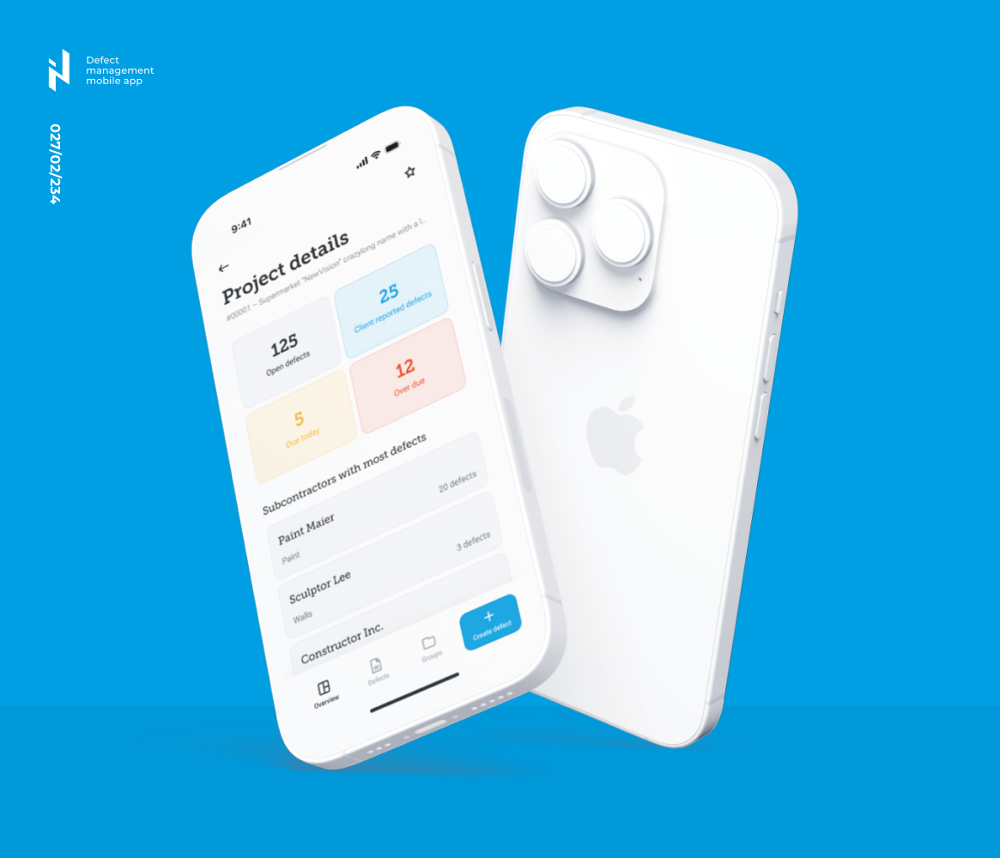

AI-Driven Mobile App for Real Estate and Construction
AI-assisted engineering moved a field workflow from concept to production-ready build in days, with human review in control.
Read case studyPrepared for Norconsult Digital
Saw the AI hiring signal around production-near ML and AI work. With Register Copilot live and ISY moving to web, the next step is stable AI inside daily project work.
Why we're here: the role asks for RAG, LLMOps, tracing, and integration into existing systems. That points to delivery pressure, not AI experiments.
The AI role says you are turning models into live customer services. ISY Beskrivelse is a clear place to feel that load. Norconsult Digital calls it one of your most used products. It is now a SaaS product with Register Copilot inside. Ken's backend team must protect domain rules, quality, and trust. If the AI layer is hard to measure, web migration and support can slow.
It is limited to Statens Vegvesen, Bane NOR, and NS 3420 codes. Next step: add a small answer test set before it writes more fields.
Owners, advisers, and contractors can now share one description. Next step: review permissions, audit trails, and comment states before usage grows.
Dedicated AI and backend squad under your product owner, with weekly demos and handover.
Elinext is a full-cycle software development company, active since 1997. We have about 700 in-house specialists and do not use freelancers or subcontractors. For Norconsult Digital, the fit is AI, backend, QA, and DevOps work around production SaaS. The same model fits a senior backend group that wants help without losing control. We work under ISO 9001 and ISO 27001. That gives the six-week squad above a mature base for secure AI delivery, while your team keeps core product decisions.

AI-assisted engineering moved a field workflow from concept to production-ready build in days, with human review in control.
Read case study
A cross-functional Elinext team improved document workflows, platform stability, DevOps, and automated QA for regulated users.
Read case study